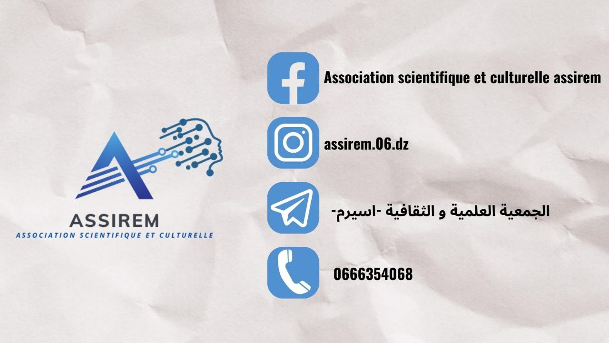

ركزت جمعيتنا العلمية والثقافية على العمل العلمي والثقافي، وذلك لمحورية هاذين المجالين في التكوين الجامعي، فأسست عدة لجان بمختلف الاهتمامات، ووضعت من الأهداف ما دفع بها نحو ريادة العمل الطلابي بالجامعة مدة من الزمن السالف، واليوم ونحن نقف ضمن رؤية ورسالة وأهداف القيادة الجديدة لهذه الجمعية على ثورةٍ علمية وثقافية، تكوينية لطلبة وطالبات جامعتنا العريقة، إذ وضعنا ضمن أولى أولوياتنا لا تأليف الكتب، لكن تأليف الطالب الرسالي المتمكن من كل المجالات المعرفية والمجتمعية، المحيط بالدعائم الأساسية للتواصل والتضامن، وتسيير الفرق والمجموعات، والمقدرة على فنون التأثير والاقناع، التي يحتاجها كل واحدٍ منا في مشوار حياته. يعلمنا العمل الجمعوي إذن قيمًا أساسية أبرزها الصبر والمسؤولية، فالطالب المنخرط يواجه مجموعة من الصعوبات التي تضعه في ميدان من التحدي بين ترتيب الأولويات، وتنظيم الوقت، فيما يخص حياته الدراسية والاجتماعية وعمله الطلابي، ما يؤدي به بطريقة مباشرة إلى تنمية شخصيته وزيادة ثقته بنفسه مانحًا إياه شعورًا بالانجاز وحافزًا للتعلم والتكوين، والعمل في مراحل مبكرة من عمره.
ثم إن العمل الطلابي يعد حلقة وصلٍ بين الطالب ومحيطه من زملائه الطلبة والاداريين والمسؤولين بالجامعة، بل وحتى حلقة وصلٍ بينه وبين سوق العمل، إذ من خلال مختلف التظاهرات التي تنظمها جمعيتنا وتشارك فيها، تتيح للمنخرطين آفاقًا وفرصًا لانشاء وتطوير علاقات مع مختصين ورياديين في مختلف المجالات، التي قد لا تتاح لغيرهم. وفي الأخير يظل العمل الطلابي متنفسًا لنا ولإخواننا المنخرطين – بعيدًا عن أجواء الدراسة – أين يُحفر في ذاكرة المنخرط سيلاً من المواقف الطريفة واللحظات الجميلة، التي لا تنسى، بل حتى العلاقات المتينة التي لا تندثر ولا تموت حتى مع انقضاء الزمن؛ وذلك لأن هذه المرحلة هي مرحلة البناء والتكوين، والمرحلة الفاصلة في حياة الطالب الجامعي. ونحن بدورنا نتيح الفرصة لكل طالب طموح وطالبة طموحة تريد الالتحاق بركب صناع التغيير ليعيشوا معنا رحلةً من العلم والعمل. بجاية في: 7/11/2023 